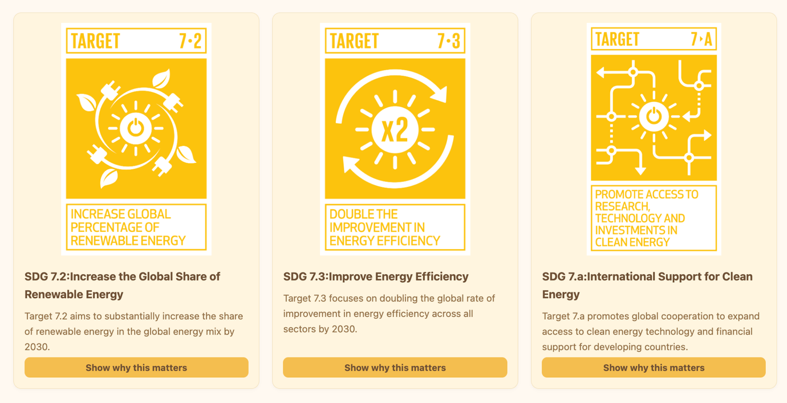
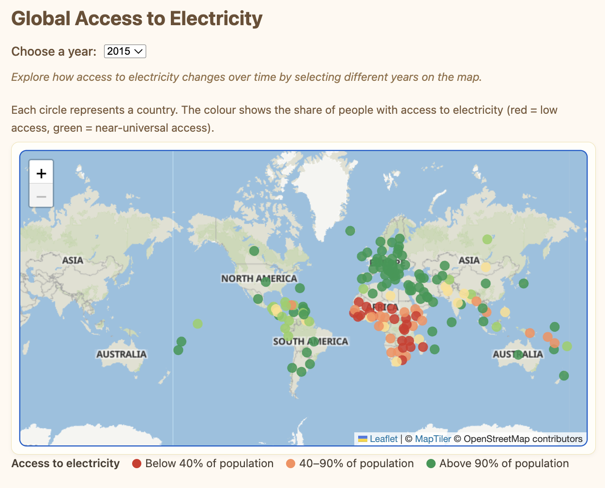
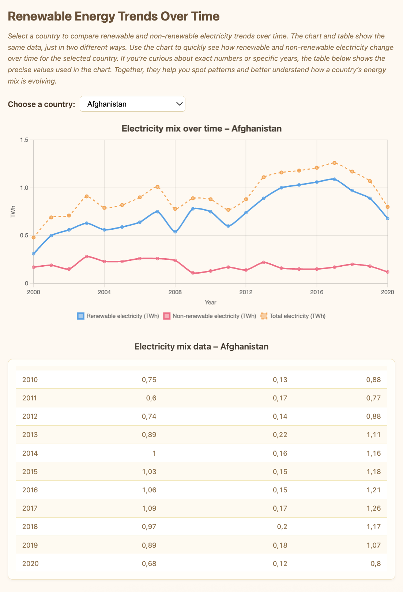

Type
Exam project — Data Driven Applications
Make complex global energy data accessible and engaging to a general audience, focused on UN Sustainable Development Goal 7 (Affordable and Clean Energy) — specifically renewable energy share, energy efficiency, and international support for clean energy.
Real screenshots from the finished site — the storytelling flow runs from a plain-language intro through interactive exploration to a synthesis of what the data actually shows.





The map's year filter, pulled directly from the project — parses the dataset once, then redraws country markers whenever the year changes rather than reloading the map.
function updateMapForYear(year) {
if (!accessLayer || !energyData.length) return;
accessLayer.clearLayers();
const rows = energyData.filter(
row => Number(row[COL_YEAR]) === Number(year)
);
rows.forEach(row => {
const lat = toNum(row[COL_LAT]);
const lon = toNum(row[COL_LON]);
const access = toNum(row[COL_ACCESS]);
if (Number.isNaN(lat) || Number.isNaN(lon) || Number.isNaN(access)) {
return;
}
const color = getAccessColor(access);
const circle = L.circleMarker([lat, lon], {
radius: 6,
color,
fillColor: color,
fillOpacity: 0.85,
weight: 0.7
});
circle.bindPopup(`<strong>${row[COL_ENTITY]}</strong><br/>
Access to electricity: ${access.toFixed(1)}%<br/>
Year: ${year}`);
circle.addTo(accessLayer);
});
}
function getAccessColor(access) {
if (access < 40) return "#d73027";
if (access < 70) return "#fc8d59";
if (access < 90) return "#fee08b";
if (access < 99) return "#91cf60";
return "#1a9850";
}